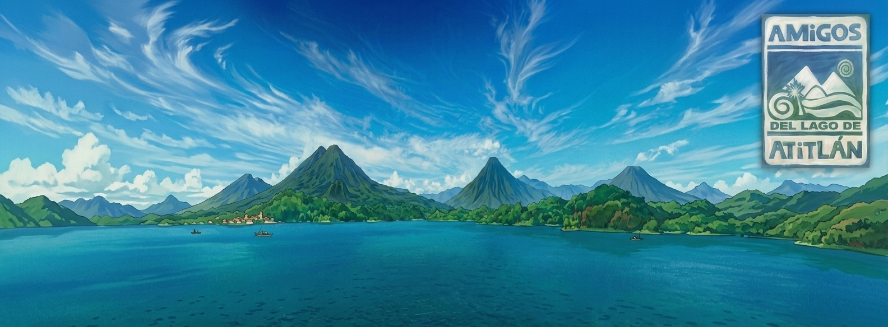

Conoce el desempeño de AWA05 en el lago de Atitlán. Consulta el agua recolectada, las condiciones del clima y el estado del sistema en un mismo lugar.
Telemetría ambiental desde el lago de Atitlán

Ocho módulos para comprender la producción de agua, el clima y el desempeño del sistema.
Cuatro etapas automáticas conectan la medición física con la visualización pública de los datos.
Nueve series climáticas y la medición de nivel permiten estudiar cuándo y cuánto agua produce la máquina.
Hardware de bajo consumo preparado para operar de forma continua y publicar telemetría desde el sitio de monitoreo.